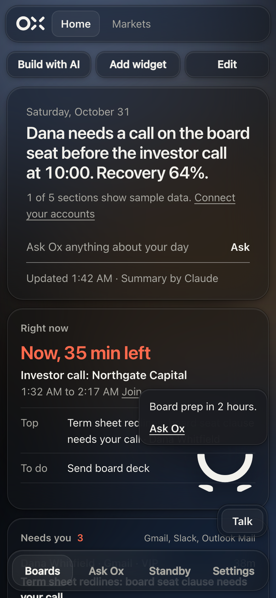
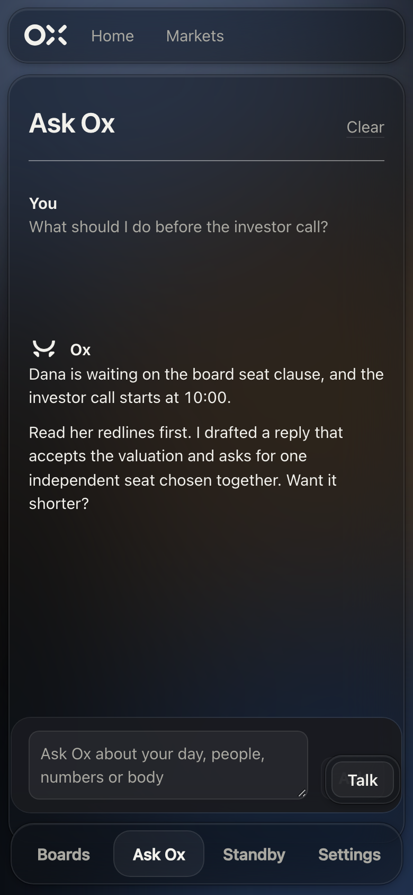
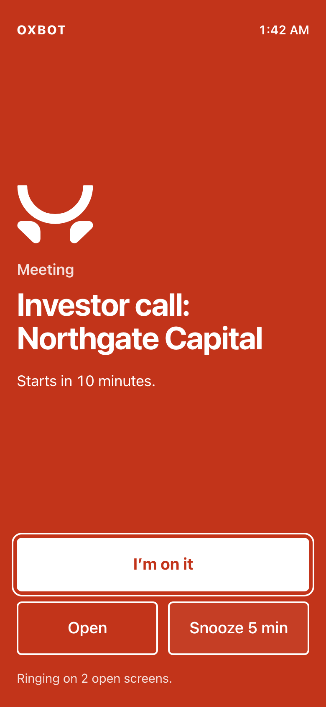
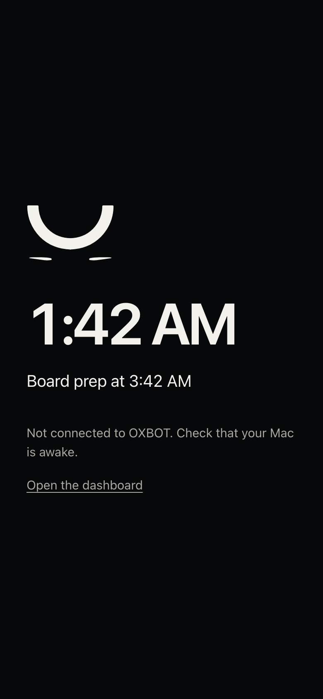
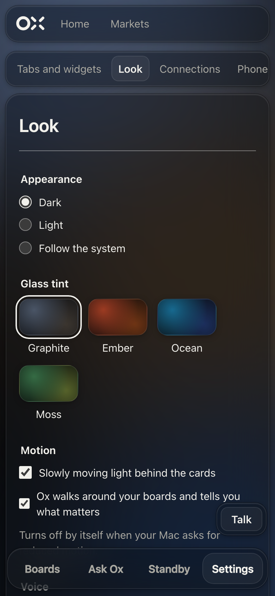
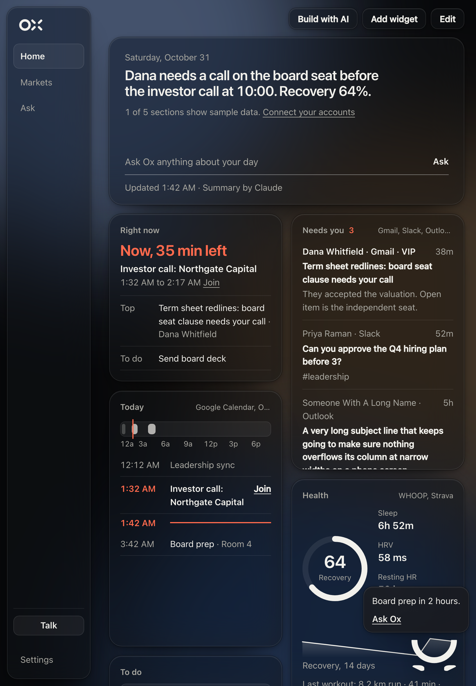
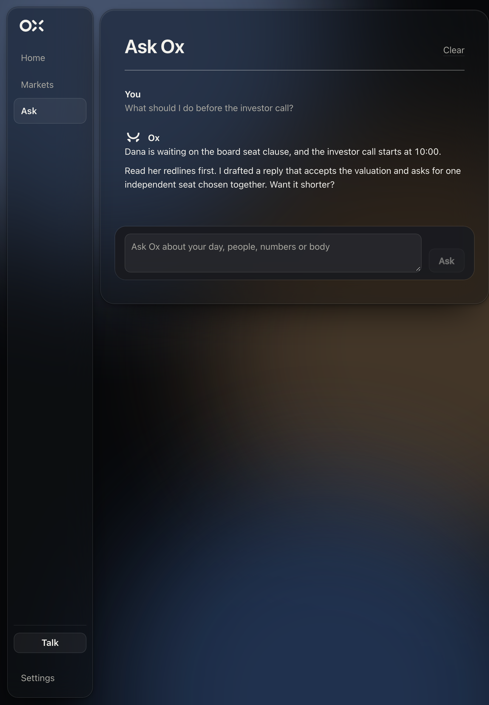
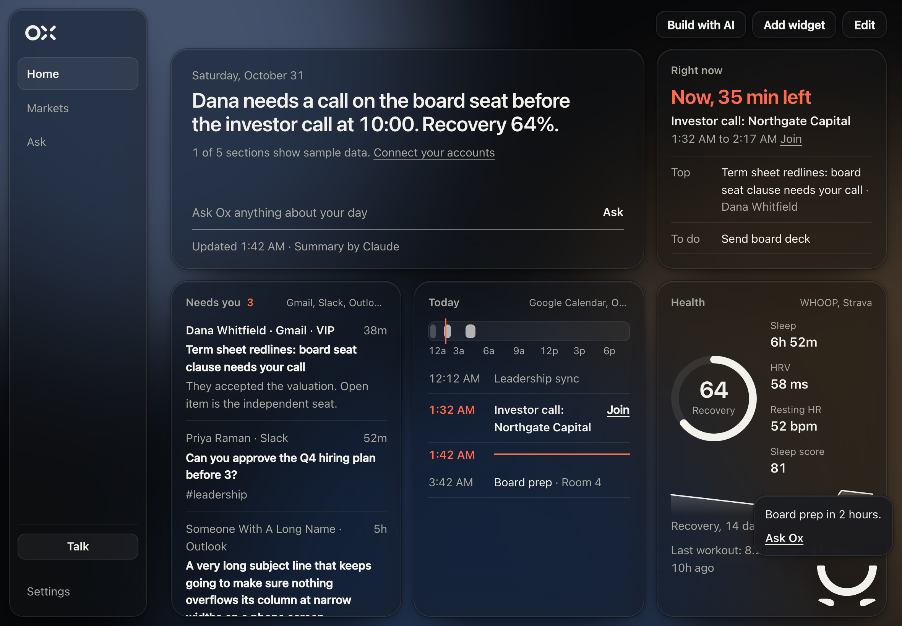
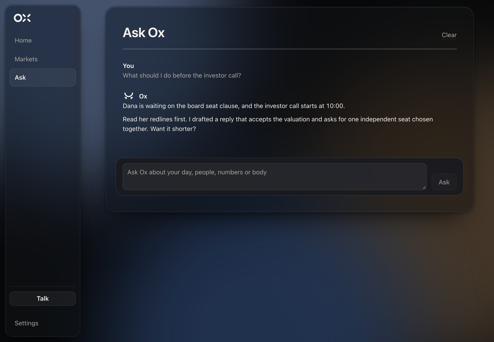

Captured from the running app with fictional data. Regenerate with CAPTURE=1 pnpm exec playwright test devices --workers=1 in apps/web.
Two eyes under upturned horns. He blinks, glances while thinking, hops when he talks, sleeps on the bedside clock and shakes when he calls you. Click a card and he charges there, horns pinched and steering from the tips, then tells you about it. Tap Talk in the function bar to ask him out loud. The plain OX wordmark stays the logo.
Board tabs along the top, a glass tab bar at the bottom: Boards, Ask Ox, Standby, Settings. Ox walks above the tab bar.





Navigation moves to a glass side rail; boards use a six-column grid.



